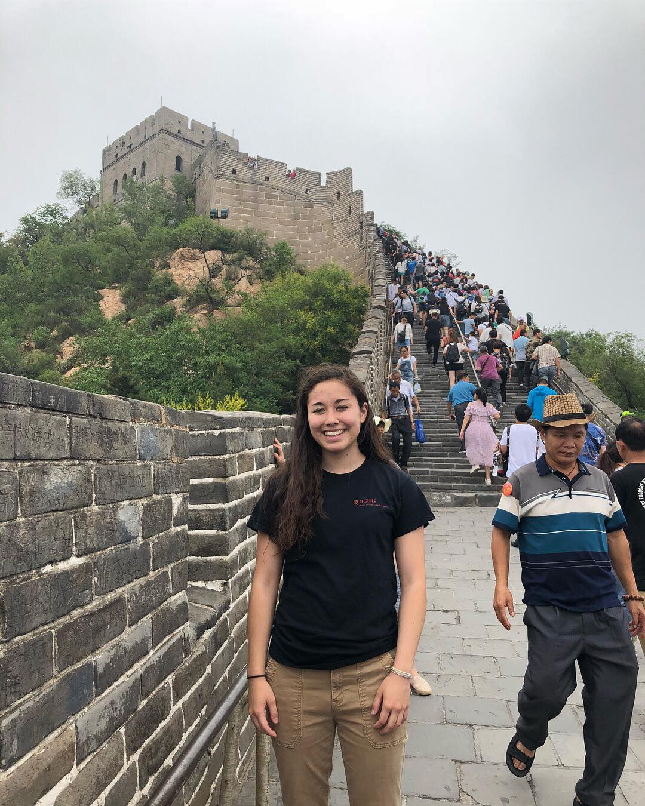
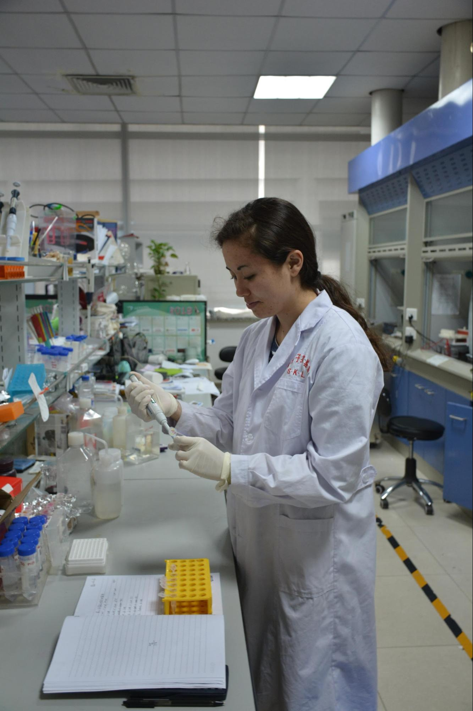
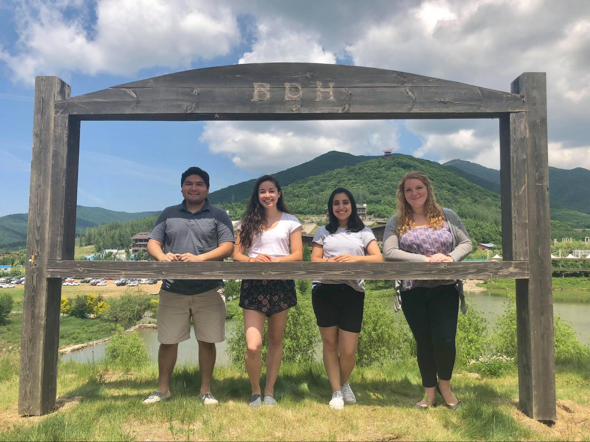

Rutgers Researchers Abroad:
Catching Up with Two International Fellowship Participants
Authors: Diljeet Kaur, Michael Nitzsche
March 6, 2019

Rutgers Students Mikio Lacapra and Nick Rojvall (SoE ‘18) with Jilin Undergraduates at Jingyue Park, Changchun

Hannah Calvelli at the Great Wall of China
The RU Global Offices at Rutgers offer a wide range of international opportunities, boasting 180 programs across 60 different countries. Although the benefits of abroad programs are well-documented, many STEM students forgo these experiences due to concerns with major requirements or delaying their research progress at Rutgers. While less common, summer research programs abroad offer the perfect opportunity to develop unique technical skills while immersed in a foreign culture.
The Rutgers-Jilin Summer Chemistry Fellowship is part of an over 30-year partnership between Rutgers and Jilin University, one of the leading research institutions in China. Every summer, four Rutgers students are invited to Jilin University for six weeks to conduct research through the State Key Lab of Supramolecular Structures and Materials or School of Chemistry. In return, Rutgers hosts a senior class of Jilin honors chemistry students for the fall semester, involving them in research and several Rutgers courses. This past week, the R3 team sat down with Hannah Calvelli (SAS 2020) and Mikio LaCapra (SoE 2019) to find out more about their summer research experiences at Jilin U.
Hannah, a Junior majoring in Molecular Biology and Biochemistry, stated she was drawn to the program to explore “whether research was a possible career choice,” while experiencing another culture. Similarly, Mikio, a senior in Materials Science and Engineering who participated in the program the previous year, was motivated by his desire to “gain further international experience and to conduct research in a new group environment.”
Hannah and Mikio both described their application process as being relatively informal. After being referred to Dr. Bernstein, the program coordinator, they were given an interview, where they were asked to discuss their qualifications and prior research experience. Upon acceptance into the program, their housing, transportation, and stipend were assured. When they arrived at Jilin, they were given the opportunity to choose from several possible host labs.
Accordingly, Hannah took the initiative to join Dr. Zhijun Chen’s Chemical Biology group, where she participated in a project developing different nanoparticles used in drug delivery. “My role was to test a possible composition for one particular nanoparticle using a fluorescent dye, optimizing different parameters,” such as the best concentration and pH.
Mikio, on the other hand, worked on a project studying mannose substituted pyrene amphiphile that self-assembled into nano-sheets as part of Dr. Myongsoo Lee’s efforts to discover molecules with cooperative functions. He spent his time practicing organic reactions and characterization of intermediate products, as well as the final self-assembled molecules.

Mikio presenting his progress at a weekly lab meeting

Hannah Calvelli performing an experiment
Both Mikio and Hannah were struck by the differences between Jilin and Rutgers. “The research environments are completely different, stemming from cultural differences,” says Mikio. “China has very high expectations for their students and expects long hours in the lab in addition to their studies.” Additionally, Hannah mentioned the intense focus placed on a single academic discipline, unlike the interdisciplinary liberal arts-based education students receive at Rutgers.
Along with conducting research, the Rutgers students also participated in a variety of other activities such as an immersive Chinese language course, representing Rutgers University at lectures and cultural exchanges, and assisting the TAQ (Jilin’s Honors Science Program) English summer camp film project. The students were also given the opportunity to enjoy cultural excursions with the TAQ students, such as trips to Changchun cultural sights and Beijing.

Rutgers students from the 2017 trip at a flower garden south of campus. From left to right Hunya Usmani (SAS ‘18), Lauren Hall (SAS ‘18), Mikio LaCapra, Nicholas Rojvall (SoE ‘18)

Rutgers students from the 2018 trip. From the left: Charly Oscanoa (SAS’20), Hannah Calvelli, Stefany Lazieh (SAS’20), and Elizabeth Ruehle (SAS’19)
Both Mikio and Hannah said that they would recommend this program and other abroad experiences for other students. Mikio mentioned the different experience he received by visiting another country not as a tourist, but rather as a team member and cultural ambassador. “In a lab group, you get to bond with fellow scientists and gain opportunities to visit local spots a tourist wouldn’t get to experience.” Hannah adds that she recommends the program for students not solely focused on doing research over the summer, but who are also interested in broadening their horizons by exploring different cultures. “At the end of the day,” she says, “the lab bench work isn’t very different. Instead, witnessing the different cultural values and how education was approached is what I’ll remember from the experience.”
Outside of the Jilin exchange program, many other opportunities are available offering international research exposure to Rutgers undergraduates. For instance, Mikio worked as a research intern at Tohoku University’s Advanced Institute for Materials Research in Japan this past summer, and Rutgers students have participated in external programs such as DAAD in Germany. Summer abroad experiences afford the opportunity for students not only to hone their technical skills, but also to make unforgettable memories experiencing a new culture. When planning your next summer internship, consider turning your sights abroad!
If you are interested in The Rutgers-Jilin Summer Chemistry Fellowship, please contact Dr. Johanna Bernstein at
jrbernst@global.rutgers.edu.